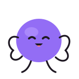
🏆
ارتباطها مشخص شدهاندنگاهی به کل سیستم
قبل از طراحی راهحل، مسئلهی واقعی را پیدا میکنم.
با تحقیق، مشاهده، گفتوگو با ذینفعان و تحلیل محصول، از نشانههای سطحی عبور میکنم تا بفهمم ریشهی مشکل کجاست.
من طراح محصولم؛ با تجربه در محصولات B2B و B2C، نرمافزارهای سازمانی، EdTech و محصولات مبتنی بر AI. تحقیق، تفکر محصول و طراحی تعامل را کنار هم میگذارم تا مسئله را بفهمم و تجربهای بسازم که برای کاربر قابل فهم باشد.
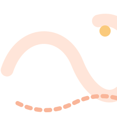

با تحقیق، مشاهده، گفتوگو با ذینفعان و تحلیل محصول، از نشانههای سطحی عبور میکنم تا بفهمم ریشهی مشکل کجاست.
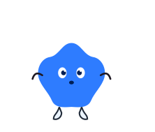
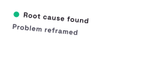
ارتباط بین کاربران، اطلاعات، جریانها، محدودیتها و تصمیمهای محصول را بررسی میکنم تا راهحل با کل تجربه هماهنگ باشد.
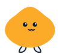
پیشفرضها را به چالش میکشم، الگوها را پیدا میکنم و قبل از رفتن سراغ راهحل، دنبال علت اصلی میگردم؛ تا تصمیم طراحی بر پایهی استدلال باشد، نه صرفاً عادت.
✦ ترکیبی از تحقیق، تفکر محصول و طراحی؛ متناسب با چیزی که مسئله واقعاً نیاز دارد.
تجربه در محصولات سازمانی، پلتفرمهای مصرفکننده، EdTech، املاک و تجربههای مبتنی بر AI.
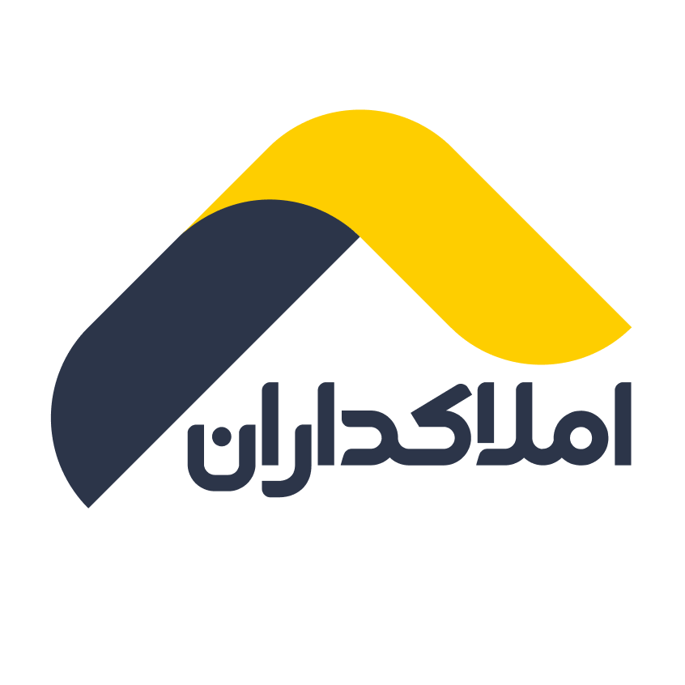
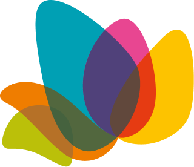
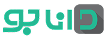
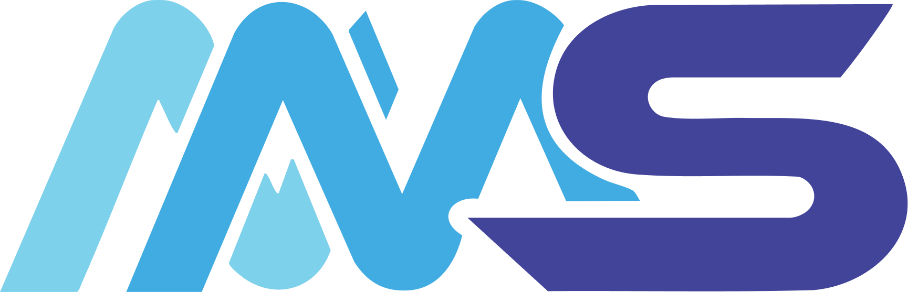
پشت صفحههای نهایی را ببین؛ از تحقیق و صورتبندی مسئله تا تصمیمهای محصول و کارکردن با محدودیتها.
دیدن کیساستادیها ↖منتخبی از محصولات، قابلیتها، بازطراحیها و سیستمهایی که در تیمها و صنعتهای مختلف روی آنها کار کردهام.
دیدن پروژهها ↖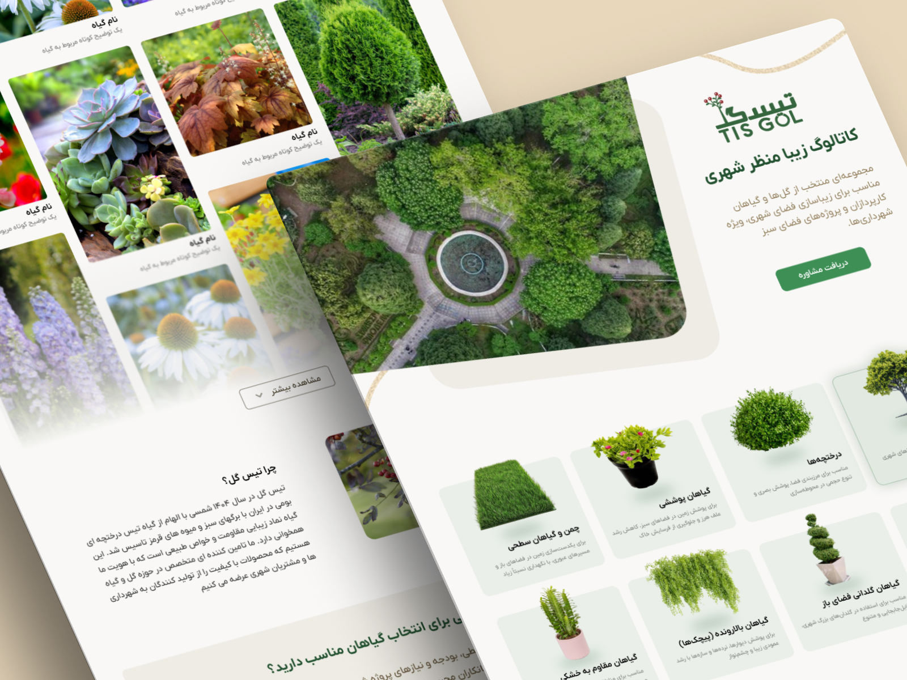
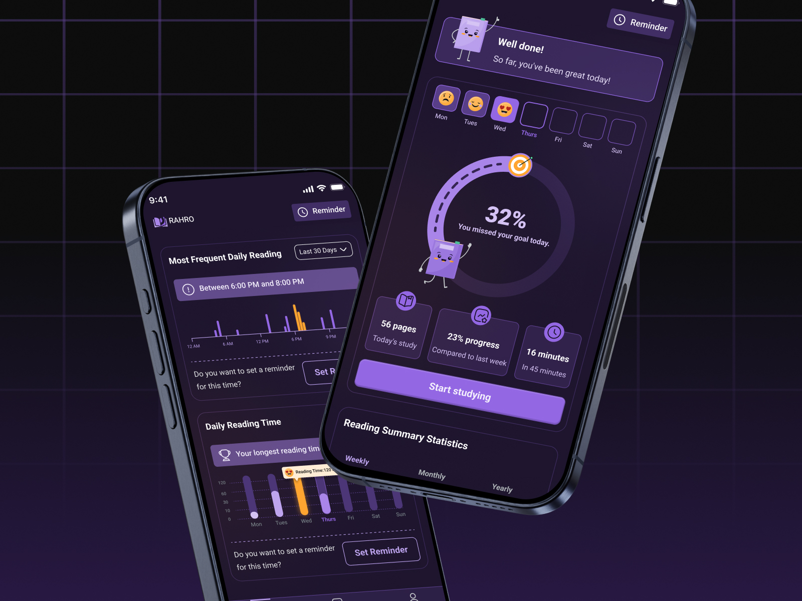
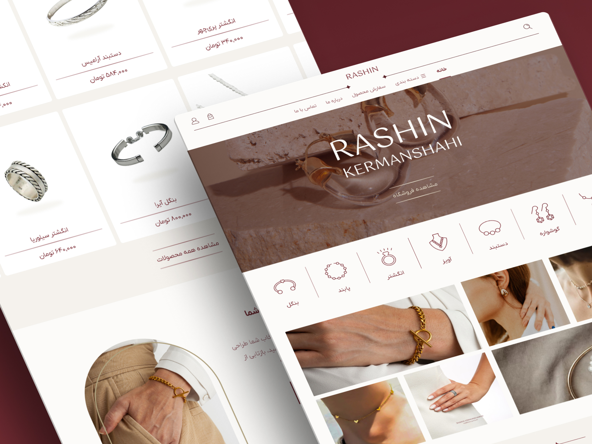


✦ ارتباطمان را حفظ کنیم
برای صحبت دربارهی طراحی محصول، یک فرصت همکاری، پروژه یا حتی تبادل ایده، خوشحال میشوم در ارتباط باشیم.

همیشه از گفتوگوهای فکرشده دربارهی طراحی محصول، فرصتهای تازه و مسئلههای جالب استقبال میکنم.